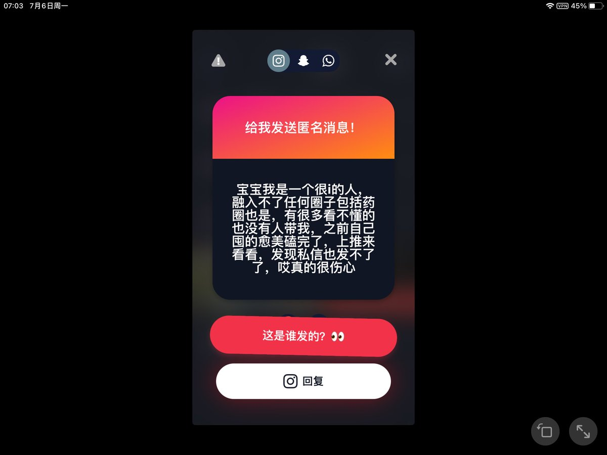

jerry
@YLS69979546
@Yang1shuai2 我也这样，以前只看不敢说话的

Mr.me
@Yang1shuai2
回复：
你可能不相信 我也是i人 我最开始玩推也不敢说话 他们发那些我只能看着 后来试着发了几句话 虽然没有人看 但还是慢慢适应了推这个环境 我想说想融入某个圈子不着急 先在推上放开自己 因为这样在推上慢慢话多了 融入某个圈子就比较容易啦 宝宝我们不着急😊
如果你不介意可以评论我 不懂的问我😊 https://t.co/r1NBGx2DDl